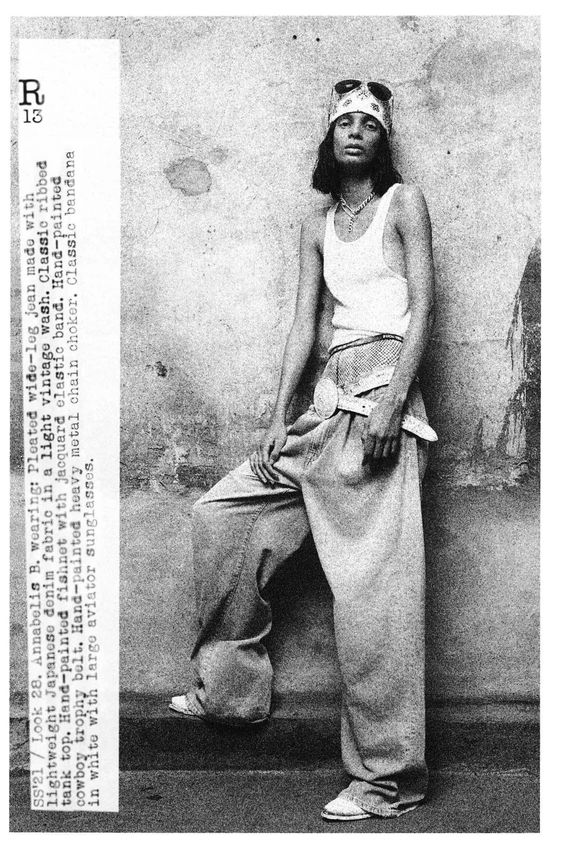
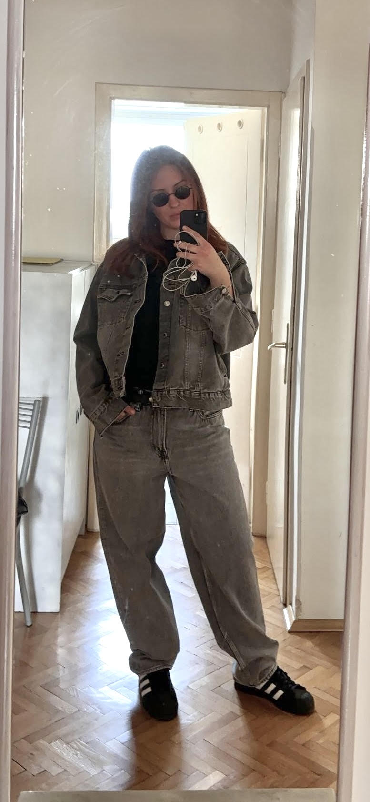
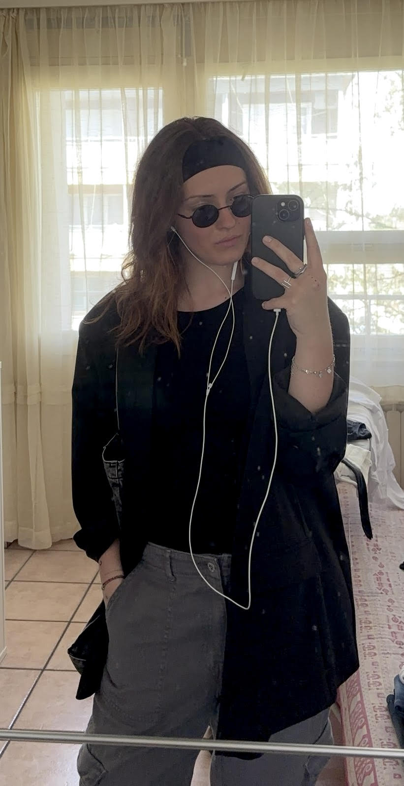
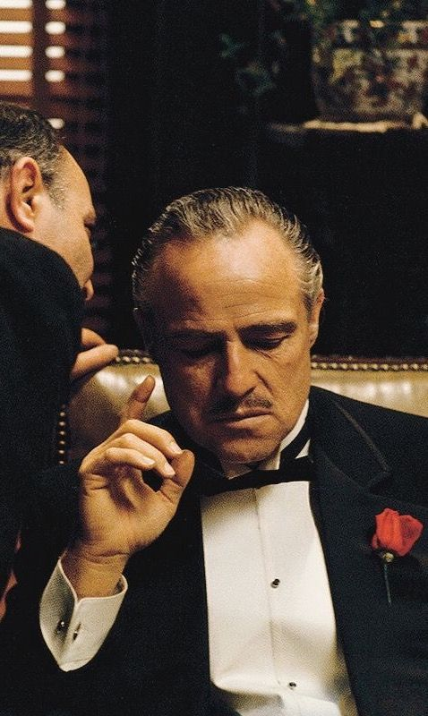
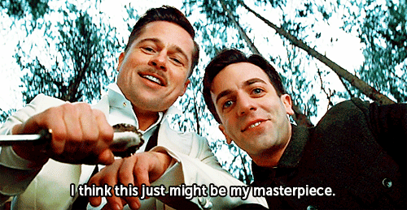
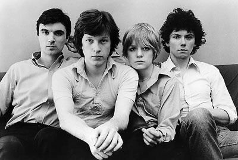
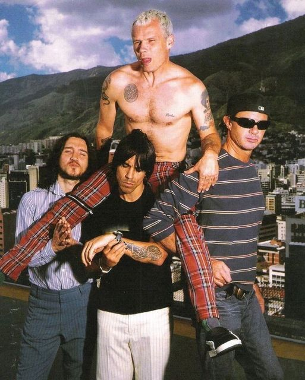
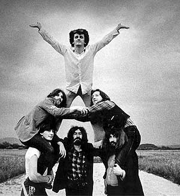
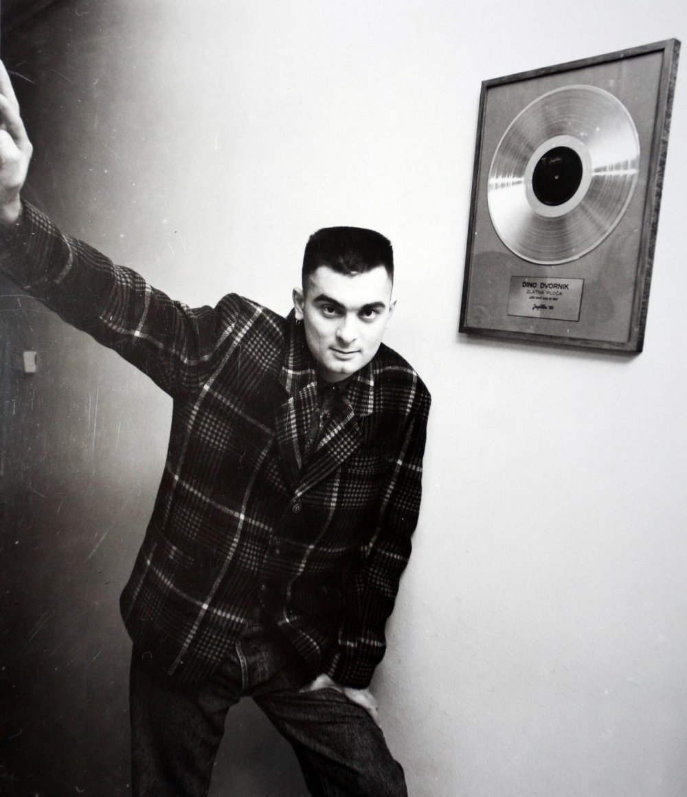

vizualni prikaz pojmova
slika za naslovnicu knjige Zločin i kazna
kolegij Informatika 1


Pozdrav! Ja sam Magda, a u ovom ću vam tekstu ukratko opisati sve što volim i u čemu nalazim inspiraciju.
Svijetom dizajna sam oduvijek sam bila fascinirana, a posebno me privlače grafički i produkt dizajn. Još od malih nogu sam se bavila kreativnim stvarima, ali tek prošle godine sam počela ozbiljnije istraživati što sve dizajn podrazumijeva.
Grafički fakultet sam odabrala jer vjerujem da mi pruža najšire i najkvalitetnije obrazovanje vezanih za moje interese. Ovaj fakultet mi omogućava bliže upoznavanje sa novim tehnologijama i izražavanje svoje kreativnosti na različite načine. Također, veselim se radu s ljudima sličnih interesa, kao i novim izazovima i iskustvima koja me čekaju.
Pored dizajna, moja zapravo i najveća strast je moda. Modu volim jer mi omogućava da izrazim svoj stil i kreativnost. Pratim modne trendove, no ne vodim se isključivo njima, dapače, više volim evergreene kojima uvijek dodam neki vlasititi pečat. Istražujem različite stilove, no najviše volim jednostavnu, old school, rokersku estetiku. Volim stvarati razne modne kombinacije, a inspiraciju pronalazim u različitim povijesnim periodima, to su uglavnom 70-e, 80-e, 90-e i 00-e godine. Moda za mene nije samo način oblačenja, već način izražavanja osobnosti i kreativnosti.
  Filmovi su još jedna moja velika strast. Oni me inspiriraju svojom pričom, vizualnim efektima i umjetničkim izrazom. Gledanje filmova mi omogućava da se opustim, ali i da učim o različitim tehnikama naracije i vizualnog izraza koje mogu primeniti u svom dizajnerskom radu. Posebno volim povijesne drame jer omogućavaju svojevrsno putovanje kroz vrijeme i upoznavanje različitih epoha i kultura. Iako mi je spektar omiljenih filmova širok i raznolik, producent čiji rad posebno volim je Quentin Tarantino. Njegova me originalnost, stil i sposobnost pričanja priča osobitno fasciniraju, uvijek je nepredvidiv i izdvaja se iz mase, što najviše cijenim kod bilo kakvog kreativnog izraza.
 Također, muzika ima važno mesto u mom životu. Najviše volim rock muziku zbog njenog energičnog ritma, snažnih emocija i poruka koje često prenosi na duhovit način. Rock slušam od malih nogu i tu ljubav su roditelji prenijeli na mene, pa sam tako i sama krenula istraživati razne bendove i njihov rad. Od stranih bendova najviše slušam Talking Headse, Dire straitse, Red Hot Chilli Pepperse, Pink Floyd, The Doorse, Led Zeppelin ali i mnoge druge, a naši domaći ex-yu omiljeni bendovi i izvođači su Buldožer, Haustor, EKV, Partibrejkers, Dino Dvornih. To su samo neki od izvođača koje slušam i volim, no u globalu sam otvorena i volim slušati većinu žanrova, tu su također rap, techno, novi val, RnB, pop, latino... Zaista volim puno toga različitog i u svemu nalazim inspiraciju, a muziku smatram jednim od najmoćnijih izvora kreativnosti.




gostovanje Talking Headsa u emisiji CBS Sunday Morning:
Dizajn za mene nije samo profesija, već i način života. Vjerujem da dizajn može transformirati način na koji vidimo svijet i komuniciramo ideje. Inspiraciju, kao što sam rekla, crpim iz svega što volim, mode, filmova, muzike, ali i svoje okoline općenito. Svaki projekt vidim kao priliku da istražim nove koncepte i unaprijedim svoje vještine. Ovo su neki od mojih dosadašnjih radova, vezanih uz druge kolegije, ali i nevezanih za fakultet.
vizualni prikaz pojmova
slika za naslovnicu knjige Zločin i kazna
kolegij Informatika 1